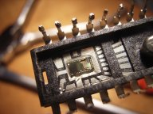

Anexo I.- Evolución histórica de los sistemas operativos.
El hardware y el software de los sistemas informáticos han evolucionado de forma paralela y conjunta en las últimas décadas. Por lo que la evolución que vamos a ver de los sistemas operativos está estrechamente relacionada con los avances en la arquitectura de los ordenadores que se produjo de cada generación.

Primera generación (1945-1955)
Los primeros ordenadores estaban construidos con tubos de vacío. En un principio no existían sistemas operativos, se programaba directamente sobre el hardware. Los programas estaban hechos directamente en código máquina y el control de las funciones básicas se realiza mediante paneles enchufables.
Hacia finales de 1950 aparecen las tarjetas perforadas que sustituyen los paneles enchufables. Las tarjetas perforadas supusieron un enorme paso ya que permitían codificar instrucciones de un programa y los datos en una cartulina con puntos que podía interpretar el ordenador. La mayoría de los programas usaban rutinas de E/S y un programa cargador (automatizaba la carga de programas ejecutables en la máquina) esto constituía una forma rudimentaria de sistema operativo.


2ª Generación (1955-1965)
Esta generación se caracteriza por la aparición de los transistores que permitieron la construcción de ordenadores más pequeños y potentes. La programación se realizaba en lenguaje ensamblador y en FORTRAN sobre tarjetas perforadas. Otro aspecto importante de esta generación es el procesamiento por lotes, en el cual mientras el sistema operativo está ejecutando un proceso, éste último dispone de todos los recursos hasta su finalización. La preparación de los trabajos se realiza a través de un lenguaje de control de trabajos conocido como JCL. El sistema operativo residía en memoria y tenía un programa de control que interpretaba las tarjetas de control, escritas JCL. Dependiendo del contenido de la tarjeta de control el sistema operativo realizaba una acción determinada. Este programa de control es un antecedente de los modernos intérpretes de órdenes.

Procesamiento Fuera de línea (Offline)
Como mejora del procesamiento por lotes surgió el procesamiento fuera de línea (off-line), en el cual las operaciones de carga de datos y salida de resultados de un proceso podían realizarse de forma externa y sin afectar al tiempo que el procesador dedicaba a los procesos. A esto ayudó la aparición de las cintas magnéticas y las impresoras de líneas. Ejemplos de sistemas operativos de la época son FMS (Fortran Monitor System) y IBSYS.
3ª Generación (1965-1980)
La aparición de los circuitos integrados (CI) supuso una mejora consiguiendo un menor tamaño y relación precio/rendimiento respecto de las máquinas de generaciones anteriores. En relación con los sistemas operativos, la característica principal de esta generación fue el desarrollo de la multiprogramación y los sistemas compartidos. En los sistemas multiprogramados se cargan varios programas en memoria simultáneamente y se alterna su ejecución. Esto maximiza la utilización del procesador. Como evolución de aparecen los sistemas de tiempo compartido donde el tiempo del procesador se comparte entre programas de varios usuarios pudiendo ser programas interactivos. Algunos de los sistemas operativos de esta generación son OS/360, CTSS, MULTICS y UNIX.
4ª Generación (1980-hasta hoy)
En esta generación se producen grandes avances en la industria hardware como la creación de los circuitos LSI (integrados a gran escala). También aparecen los ordenadores personales, entre finales de la anterior generación y principios de la presente. Ejemplos de sistemas operativos de los primeros ordenadores personales son MS-DOS, desarrollado por Microsoft, Inc., para el IBM PC y MacOS de Apple Computer, Inc. Steve Jobs, cofundador de Apple, apostó por la primera interfaz gráfica basada en ventanas, iconos, menús y ratón a partir de una investigación realizada por Xerox. Siguiendo esta filosofía aparecería MS Windows. Durante los 90 apareció Linux a partir del núcleo desarrollado por Linus Torvalds. Los sistemas operativos evolucionan hacia sistemas interactivos con una interfaz cada vez más amigable al usuario. Los sistemas Windows han ido evolucionando, con diferentes versiones tanto para escritorio como para servidor (Windows 3.x, 98, 2000, XP, Vista, 7, Windows Server 2003, 2008, etc), al igual que lo han hecho Linux (con multitud de distribuciones, Ubuntu, Debian, RedHat, Mandrake, etc) y los sistemas Mac (Mac OS 8, OS 9, OS X, Mac OS X 10.6 "Snow Leopard", entre otros).

Un avance importante fue el desarrollo de redes de ordenadores a mediados de los años 80 que ejecutan sistemas operativos en red y sistemas operativos distribuidos. En un sistema operativo en red los usuarios tienen conocimiento de la existencia de múltiples ordenadores y pueden acceder a máquinas remotas y copiar archivos de un ordenador a otro. En un sistema distribuido los usuarios no saben donde se están ejecutando sus programas o dónde están ubicados sus programas, ya que los recursos de procesamiento, memoria y datos están distribuidos entre los ordenadores de la red, pero todo esto es transparente al usuario.
Actualmente, existen sistemas operativos integrados, para una gran diversidad de dispositivos electrónicos, tales como, teléfonos móviles, PDAs (Personal Digital Assistant, Asistente Digital Personal u ordenador de bolsillo), otros dispositivos de comunicaciones e informática y electrodomésticos. Ejemplos de este tipo de sistemas operativos son PalmOS, WindowsCE, Android OS, etc. Haremos una referencia especial al último, Android OS, se trata de un sistema operativo basado en Linux. Fue diseñado en un principio para dispositivos móviles, tales como teléfonos inteligentes y tablets, pero actualmente se encuentra en desarrollo para su aplicación también en netbooks y PCs.